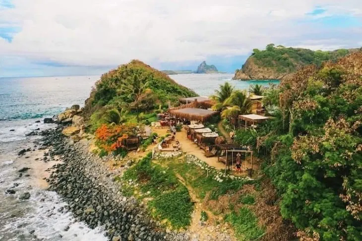
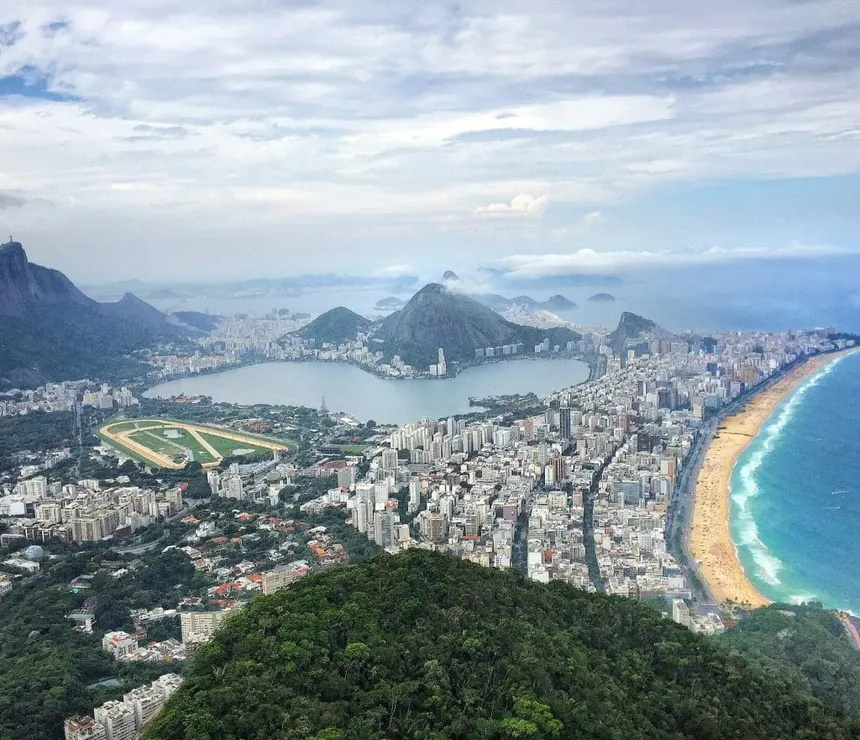
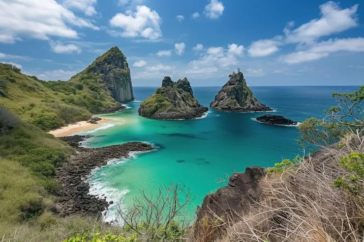

Fernando de Noronha
Información general
Fernando de Noronha es un archipiélago volcánico famoso por sus playas, aguas transparentes y biodiversidad marina. Gran parte de su entorno está protegido, por lo que el turismo se encuentra regulado y existen normas de conservación y tasas de acceso que pueden variar.
Atractivos turisticos
Baia do Sancho
Playa reconocida por sus aguas claras y el paisaje natural que la rodea.

Baia dos Porcos
Pequeña bahia con formaciones rocosas y vistas al Morro Dois Irmaos.

Projeto Tamar
Iniciativa de conservacion marina que desarrolla actividades de educacion ambiental y proteccion de tortugas.

Gastronomia
Algunas comidas y preparaciones que se pueden probar:
Pescados y mariscos
Se ofrecen en distintos restaurantes de la isla.
Moqueca
Guiso brasileño de pescado o mariscos, preparado con ingredientes regionales.
Tapioca
Preparacion popular en Brasil que puede encontrarse en locales de comida.
Sitios famosos
Morro Dois Irmaos
Dos grandes formaciones rocosas que se convirtieron en una de las imagenes mas conocidas del archipielago.
Forte Nossa Senhora dos Remedios
Fortificacion historica ubicada en una zona elevada de la isla principal.
Vila dos Remedios
area historica y uno de los principales nucleos de servicios del archipielago.
Actividades para turistas
- Practicar snorkel en zonas permitidas y respetando las normas ambientales.
- Realizar paseos en barco con operadores autorizados.
- Visitar playas y miradores habilitados.
- Hacer caminatas guiadas y conocer proyectos de conservacion.